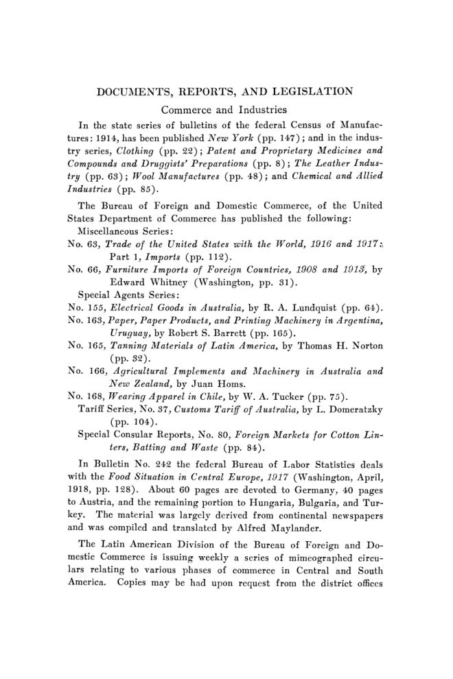

O trabalhismo britânico, a liga dos agricultores e a sombra das finanças
Leitura: 17 min
Cole explica a reorganização do trabalhismo britânico; Boyle, a Nonpartisan League; Ely, a colonização de terras; Plehn separa o custo real da guerra de sua sombra financeira; Tinnes propõe um dólar estável.


No início de 1918, a Representation of the People act pôs nas listas eleitorais britânicas pelo menos 5 milhões de mulheres e 2 milhões de novos eleitores homens. A máquina dos sindicatos e das sociedades socialistas, que já não cobria o eleitorado antigo, não tinha como alcançar o novo. G. D. H. Cole, do Magdalen College, em Oxford, parte desse fato para explicar por que o Partido Trabalhista refazia sua organização, e com isso abre o número de setembro de 1918 da American Economic Review.
A edição tem sete textos, quase todos marcados pela guerra. James E. Boyle, do College of Agriculture da Cornell University, narra a ascensão da Nonpartisan League em Dakota do Norte; Richard T. Ely, da University of Wisconsin, examina a colonização privada de terras novas; Isaac A. Loos, da State University of Iowa, defende o método histórico no estudo da economia; Carl C. Plehn, da University of California, separa os custos reais da guerra de sua expressão em dinheiro; e D. J. Tinnes, de Hunter, Dakota do Norte, propõe um dólar de poder de compra constante e, numa comunicação, um termo novo para o valor de troca. Seguem resenhas organizadas por área, listas de livros novos, documentos, resumos de periódicos e as notas.
Por que sindicatos tão fortes rendiam tão pouco na política?
G. D. H. Cole (Magdalen College, Oxford) · “Recent Developments in the British Labor Movement” · pp. 485–504
Cole começa por um paradoxo que os observadores estrangeiros notavam: a enorme força aparente dos sindicatos britânicos e o pouco que eles haviam conseguido na política. Sua explicação é a falta de uma teoria consciente. Primeiro dos grandes movimentos operários modernos, o britânico cresceu aos poucos, resolvendo os problemas à medida que surgiam, e acumulou os traços das instituições antigas, inclusive os interesses criados. Os sindicatos de ofício qualificado de meados do século XIX consideravam ilusório organizar os menos qualificados; a greve das docas de 1889 mostrou que era possível, mas os novos sindicatos gerais nasceram separados e acabaram, diz Cole, como uma espécie de sindicato de ofício dos trabalhadores sem ofício.
A mesma falta de teoria marcou a política. Os primeiros deputados operários entraram no Parlamento como liberais; o Labour Representation Committee só se formou em 1899, e o partido só passou a pesar na Câmara dos Comuns em 1906, unido momentaneamente pela ameaça que a decisão Taff Vale representava para o direito de greve. Cada deputado olhava as questões do ponto de vista de seu ofício: o partido era, na expressão da época, consciente do ofício, e não da classe. Conviviam nele uma ala socialista, cuja teoria Cole julga estreita por ser apenas legislativa e administrativa, e uma ala sindical quase sem teoria.
A nova constituição de 1918 abre os partidos locais a membros individuais, o que dá espaço às mulheres e aos intelectuais, mas deixa as decisões de política às grandes uniões. Cole critica o memorando “Labour in the New Social Order”, que atribui a Sidney Webb, por tratar a questão social como matéria de leis e de funcionalismo. O que move as bases, sustenta, é a ideia de controle da indústria, que se expressa no movimento dos shop stewards.
“A reivindicação real do trabalho não é o controle conjunto, mas a transferência do controle.” (“the real labor claim is not for joint control, but for a transference of control”)
Como uma liga de agricultores chegou ao governo de Dakota do Norte?
James E. Boyle (College of Agriculture, Cornell University) · “The Agrarian Movement in the Northwest” · pp. 505–521
No verão de 1916, a Farmers' Nonpartisan Political League de Dakota do Norte lançou uma chapa completa e, em novembro, elegeu o governador e todos os demais cargos estaduais menos um, três dos cinco juízes da suprema corte e uma maioria segura da câmara. James E. Boyle procura a origem do movimento na economia da região do trigo duro de primavera, centrada em Dakota do Norte e estendida às três províncias canadenses das pradarias. É uma economia de um só produto e de grandes fazendas, com o mercado longe: o trigo segue para os moinhos de Minneapolis ou para os exportadores de Duluth, e no Canadá para Winnipeg. Para Boyle, a distância amplia aos olhos do agricultor os defeitos do mercado terminal.
O núcleo do artigo é uma comparação entre a autoajuda canadense e a ajuda estatal americana. No Canadá, uma comissão real apontou em 1899 o monopólio de uma única ferrovia e dos armazéns construídos em terrenos dela, e os agricultores responderam com cooperativas: a Grain Growers' Grain Company, que movimentou 48 milhões de bushels na safra de 1915–1916, e a Saskatchewan Co-operative Elevator Company, para a qual os agricultores entraram com 15% do capital e tomaram 85% emprestados da província. Nos Estados Unidos, a agitação contra o comércio de grãos desembocou num programa de propriedade estatal.
No poder a partir de janeiro de 1917, a liga não pôs em vigor nenhum dos cinco itens originais. O senado barrou a tentativa de promulgar uma nova constituição como lei ordinária, a House Bill 44, e o governador vetou o projeto de um armazém terminal estatal. Boyle registra leis aprovadas sobre registro de títulos de terra, ervas daninhas e enfermeiras escolares, e conclui que o movimento, ao atrelar uma causa econômica a um partido, tende a seguir o caminho da Farmers' Alliance.
Quem deve organizar a colonização das terras novas?
Richard T. Ely (University of Wisconsin) · “Private Colonization of the Land” · pp. 522–548
Richard T. Ely define colonização como o assentamento de terras por grupos organizados sob alguma liderança, em geral a dos donos da terra. É privada quando o dono busca lucro; pública quando a terra é do Estado e o assentamento visa o bem-estar geral, como na Austrália, na Nova Zelândia e na experiência que a Califórnia iniciava sob a liderança de Elwood Mead. Os Estados Unidos, observa, nunca tiveram uma teoria aceita de colonização: distribuíram terra a indivíduos e empresas, em lotes normais de 160 acres, na expectativa de que cada um, buscando o próprio interesse, construísse espontaneamente uma ordem social sólida.
Para Ely, a colonização ainda dependerá por muito tempo da iniciativa privada, e precisa cumprir três propósitos: dar lucro razoável a quem vende e financia, permitir ao colono viver enquanto faz a fazenda e torná-la sua em prazo razoável, e servir ao interesse público. Ele descreve três colônias que visitou em 1917 no Wisconsin, em Conrath, em Rusk Farm e no sul do condado de Sawyer. Nelas a empresa escolhe a terra com base nos levantamentos de solo, vende fazendas já equipadas e mantém fazendas de demonstração; o plano nº 2 oferecia 40 acres com casa, uma vaca, um porco e galinhas, com entrada de US$ 250.
O lado público vem em seguida. Como o comprador de terra muitas vezes não tem como julgar o que compra, Ely recorre a Mill sobre os limites do laissez faire e propõe tratar a terra como serviço de utilidade pública: comissões de terras análogas às comissões de ferrovias, licença para corretores, aprovação prévia dos planos das empresas de colonização e companhias de lucro limitado a 6%. Cita a estimativa de que cerca de um terço da terra do norte do Wisconsin seria submarginal e defende levá-la à propriedade pública, por exemplo para florestas.
Por que estudar economia pela história?
Isaac A. Loos (State University of Iowa) · “Historical Approach to Economics” · pp. 549–563
Isaac A. Loos escreve contra uma especialização que, a seu ver, levava os estudantes a perder de vista a base geral da teoria. Seu artigo é uma defesa do método histórico e da unidade entre história, política, filosofia e economia. Começa por distinguir a economia como realidade concreta da economia como ciência. Uma economia, no primeiro sentido, é qualquer grupo de pessoas ligadas por costume ou lei na busca do sustento: uma tribo, uma comunidade, o Estado, uma empresa, uma família. A ciência procura as regras dessa atividade, e Loos recusa reduzi-las ao princípio da poupança ou do menor esforço.
A história da própria disciplina serve de argumento. A economia moderna começou, diz ele, pela afirmação da liberdade de contrato; mercantilistas e cameralistas cuidaram das finanças públicas e da administração; os clássicos ingleses exaltaram a poupança e a abstinência; e a busca recente da eficiência e da administração de empresas trazia de volta o ponto de vista cameralista. A história econômica, que Loos chama de economia genética, descreve as formas sucessivas de organização e os estágios do progresso econômico. A analogia biológica serve como andaime para os estudantes, desde que não apague a vontade e o propósito que distinguem a organização humana.
“A organização econômica foi a primeira forma de organização social.” (“Economic organization was the first form of social organization.”)
Na interpretação econômica da história, Loos vê uma doutrina antiga, que remonta aos gregos, passa por Vico, Montesquieu e Buckle e ganha forma nova com Marx. Aceita-a, mas não como explicação exclusiva: o economista começa pelo que vem primeiro no tempo, as instituições econômicas, sem negar as forças éticas e espirituais. Propõe classificar os estágios econômicos combinando quatro critérios, a organização econômica, a forma dominante de indústria, a forma de troca e a condição do trabalho, com o estágio cultural correspondente. E pede que economistas trabalhem com cientistas políticos, sociólogos, psicólogos, juristas e legisladores, fechando com Marshall: o progresso econômico deve coincidir com o progresso humano.
O que a guerra custa de fato, além dos dólares?
Carl C. Plehn (University of California) · “Substance and Shadow in War Finance” · pp. 564–578
Carl C. Plehn usa uma imagem em todo o artigo: as finanças são a sombra projetada pelo trabalho humano, que é a substância. Com ela desfaz a tese, comum antes da guerra, de que um grande conflito seria impossível de financiar ou logo terminaria por exaustão financeira. Enquanto houver gente que trabalha e coisas para possuir e usar, escreve, haverá finanças; no quarto ano da guerra, os desembolsos mensais só cresciam. O custo real da guerra não é o dinheiro arrecadado ou emprestado, mas, como propôs Pigou, aquilo de que a sociedade tem de abrir mão.
Para mostrá-lo, Plehn imagina uma tribo de mil trabalhadores que converte duzentos de seus melhores pastores e lavradores em sacerdotes, dedicados apenas à oração e aos sacrifícios. Os oitocentos restantes precisam trabalhar mais ou consumir menos. Na economia real, as lacunas deixadas pelos que estão nas armas e nas indústrias de guerra são preenchidas por três fontes: o lazer, a economia no uso dos bens e as invenções. A maior e mais confiável é o lazer, que inclui o desemprego, a capacidade ociosa de quem trabalha abaixo do que pode e o trabalho das mulheres; uma hora a mais numa jornada de oito equivale a 12,5%.
A inflação aparece como uma antitoxina: útil para atrair recursos depressa, venenosa em excesso e dura com quem fica fora da alta de salários e lucros. Na controvérsia entre impostos e empréstimos, Plehn rejeita a tese de financiar tudo com impostos, que considera um sofisma por supor que os fundos representam apenas realidades presentes. O crédito, sustenta, permite trazer ao presente o valor da renda futura.
“As finanças de guerra são a socialização para a guerra pelo mecanismo do laissez faire.” (“War finance is war socialization through the mechanism of laissez faire.”)
É possível um dólar de poder de compra constante?
D. J. Tinnes (Hunter, North Dakota) · “The Market Gage Dollar: A Unit of Constant Purchasing Power” · pp. 579–584
D. J. Tinnes apresenta o plano Market Gage, originado em 1896 e publicado primeiro num jornal do interior de Minnesota: estabilizar o poder de compra do dólar alterando seu conteúdo em ouro de acordo com um índice de preços no atacado. Ele o compara ao dólar compensado de Irving Fisher. Os dois partem da mesma ideia, mas Fisher combinava senhoriagem com números-índice, fazia ajustes mensais e dava pouca importância à ponderação; o Market Gage seria ponderado por todo o comércio atacadista e ajustado diariamente.
A construção do índice é descrita passo a passo. Lista-se cada mercadoria cujo comércio represente pelo menos 0,005 do total, com seu valor anual, sua participação decimal, o grau de referência e o mercado que fornece o preço; o restante é agrupado, de modo que o quadro tenha menos de cem linhas. Cada linha registra a quantidade que vale um dólar no dia; no início, todos os componentes valem 1, e a soma ponderada também. Quando os preços mudam, a soma se afasta de 1, e o Tesouro corrige a taxa de resgate do dia seguinte. O quadro do artigo, adverte o autor, usa pesos e preços fictícios e um comércio anual suposto de 40 bilhões.
O plano exige retirar de circulação todas as moedas de ouro e tornar todo o meio circulante resgatável em ouro em barra, às cotações publicadas pelo Tesouro. Tinnes admite que preços pouco flexíveis, presos ao costume ou a listas impressas, demorariam a se ajustar, mas espera que o índice do dia seguinte corrija o atraso. Para o comércio internacional, propõe o próprio “gram-d'or” como unidade comum, na qual as moedas nacionais seriam cotadas: o dólar a 1,6718 e o franco a 0,3626, de modo que um dólar valeria 4,61 francos.
Que nome dar ao valor de troca?
D. J. Tinnes (Hunter, North Dakota) · “Why Not Valure?” · pp. 585–586
Na edição de junho de 1918 da revista, Irving Fisher discutira se utility era o termo adequado para o conceito que designava e propusera substituí-lo por wantability, com uma unidade chamada wantab. Na comunicação “Why Not Valure?”, D. J. Tinnes aceita que wantability é preferível a wantedness se o propósito é indicar a capacidade de ser desejado, e não o fato de um objeto ser efetivamente desejado. Mas pergunta como se chegaria à medida estatística da wantability marginal senão por dados que registram a wantedness marginal, a qualidade que de fato forma o valor.
Tinnes conta que, pouco mais de um ano antes, sugerira a Fisher, numa conversa, um nome novo para outro conceito, o de valor de troca, e transcreve a proposta tal como a publicara num de seus folhetos de circulação privada. A palavra value, argumenta, confunde o leitor comum, porque tem outro sentido corrente e porque os economistas a usam com modificadores. Compara a situação à de uma língua sem palavra para a cor preta, em que dark pudesse significar preto, quase preto, sombrio ou obscuro. O homem de negócios, escreve, quer entender o sentido sem ginástica mental.
Sua escolha é o termo obsoleto valure, com o sentido alterado e restrito ao valor geral de troca, deixando a value o sentido comum. Dele derivariam valuron, ou a forma abreviada val, para o bem econômico, aquilo que satisfaz um desejo e tem valure, e valuration para a determinação do valure. Como o valure só pode ser determinado por comparação de preços, Tinnes não vê necessidade de nomear uma quantidade medida dele: medi-lo em abstrato seria medir com palavras o imensurável, um passatempo filosófico.
A comunicação se liga ao artigo anterior do mesmo autor. Nos dois textos, o ponto de partida é que o valor de troca só se observa nos preços: num, para construir um padrão monetário de poder de compra constante; no outro, para escolher o vocabulário com que os economistas falam dele.
O que mais há na edição?
As resenhas, organizadas por área, incluem Theories of Social Progress, de Arthur James Todd, por G. A. Kleene; The Political History of the Public Lands from 1840 to 1862, de George M. Stephenson, por Frederic L. Paxson; War Time Control of Industry, de Howard L. Gray, por John Graham Brooks; The Foundations of National Prosperity, de Ely, Hess, Leith e Carver, por Fred G. Tryon; The High Cost of Living, de Frederic C. Howe, por B. H. Hibbard; The Regulation of Railways, de Samuel O. Dunn, por Eliot Jones; e Les Sociétés Coopératives de Consommation, de Charles Gide, também por Brooks. Os documentos tratam da depreciação nas concessionárias de Nova York, por John Bauer, do relatório da Railroad Wage Commission, por Julius H. Parmelee, da prevenção do desemprego, por W. M. Leiserson, e da proposta do senador Owen para estabilizar o câmbio, por H. L. Reed. As notas listam as comissões da American Economic Association sobre os problemas econômicos da guerra, entre elas a do poder de compra da moeda, presidida por Irving Fisher, e a de finanças de guerra, por E. R. A. Seligman.
Na minha leitura
Na minha leitura, os artigos da edição se dividem entre organização e medida. Cole, Boyle e Ely tratam de como os agentes econômicos se organizam: sindicatos de ofício ou de indústria, cooperativas ou empresas estatais, colonização privada sob regras públicas. Nos três, o resultado econômico depende do desenho da organização que executa um programa: a cooperativa canadense e o armazém estatal americano partiam de queixas semelhantes e chegaram a lugares diferentes.
Plehn e Tinnes tratam da medida. Plehn insiste que o dinheiro apenas registra os recursos desviados para a guerra, e que a pergunta relevante é de que se abre mão; Tinnes procura uma unidade cujo poder de compra não varie. São duas respostas ao mesmo problema, o de que os preços são uma régua que se move. Loos, ao pedir que a teoria seja lida pela história das instituições, oferece o pano de fundo das duas linhas.
Glossário
- Sindicato de ofício (craft union)
- sindicato que reúne trabalhadores de uma mesma qualificação, qualquer que seja a indústria.
- Sindicalismo industrial
- organização de todos os trabalhadores de uma indústria, qualificados ou não, num mesmo sindicato.
- Shop stewards
- delegados eleitos pelos trabalhadores dentro de cada oficina ou fábrica.
- Socialismo de guildas
- corrente que propunha a autogestão da indústria pelos trabalhadores ao lado de um Estado democrático.
- Nonpartisan League
- liga de agricultores fundada em Dakota do Norte que disputava as primárias dos partidos existentes.
- Armazém terminal (terminal elevator)
- silo de grande porte nos mercados finais de grãos, onde o produto é armazenado, classificado e misturado.
- Bushel
- medida de volume de grãos, de cerca de 35 litros.
- Terra submarginal
- terra cujo cultivo não paga os retornos normais do trabalho e do capital.
- Preço suficiente
- na teoria de Wakefield, preço da terra nova alto o bastante para manter oferta de trabalho assalariado, mas não para impedir o acesso à propriedade.
- Custo real da guerra
- na expressão de Pigou, os bens e serviços de que a sociedade abre mão para fazer a guerra.
- Dólar compensado
- proposta de Irving Fisher de variar o conteúdo em ouro do dólar para estabilizar seu poder de compra.
- Número-índice ponderado
- média de preços em que cada item pesa conforme sua importância no comércio.
- Valor de troca
- quantidade de outros bens que um bem obtém no mercado.
Artigos (7)
- Recent Developments in the British Labor Movement — G. D. H. Cole (Magdalen College, Oxford) (pp. 485–504) · resenha acima · comentário completo · JSTOR
- The Agrarian Movement in the Northwest — James E. Boyle (College of Agriculture, Cornell University) (pp. 505–521) · resenha acima · JSTOR
- Private Colonization of the Land — Richard T. Ely (University of Wisconsin) (pp. 522–548) · resenha acima · JSTOR
- Historical Approach to Economics — Isaac A. Loos (State University of Iowa) (pp. 549–563) · resenha acima · JSTOR
- Substance and Shadow in War Finance — Carl C. Plehn (University of California) (pp. 564–578) · resenha acima · comentário completo · JSTOR
- The Market Gage Dollar: A Unit of Constant Purchasing Power — D. J. Tinnes (Hunter, North Dakota) (pp. 579–584) · resenha acima · JSTOR
- Why Not Valure? — D. J. Tinnes (Hunter, North Dakota) (pp. 585–586) · resenha acima · JSTOR
Resenhas (15)
- Arthur James Todd, Theories of Social Progress — G. A. Kleene (pp. 587–589). Resenha de G. A. Kleene. JSTOR
- George M. Stephenson, The Political History of the Public Lands from 1840 to 1862 — Frederic L. Paxson (pp. 590–591). Resenha de Frederic L. Paxson. JSTOR
- Arthur Meier Schlesinger, The Colonial Merchants and the American Revolution, 1763–1776 — Amelia C. Ford (pp. 591–592). Resenha de Amelia C. Ford. JSTOR
- Howard L. Gray, War Time Control of Industry — John Graham Brooks (pp. 593–595). Resenha de John Graham Brooks. JSTOR
- Richard T. Ely, Ralph H. Hess, Charles K. Leith e Thomas Nixon Carver, The Foundations of National Prosperity — Fred G. Tryon (pp. 598–601). Resenha de Fred G. Tryon. JSTOR
- Frederic C. Howe, The High Cost of Living — B. H. Hibbard (pp. 601–608). Resenha de B. H. Hibbard. JSTOR
- Samuel O. Dunn, The Regulation of Railways — Eliot Jones (pp. 609–611). Resenha de Eliot Jones. JSTOR
- E. B. Biggar, The Canadian Railway Problem — W. W. Swanson (pp. 611–614). Resenha de W. W. Swanson. JSTOR
- Hiram T. Scovill, Farm Accounting; C. S. Orwin, The Determination of Farming Costs — Wilbur O. Hedrick (pp. 616–619). Resenha de Wilbur O. Hedrick. JSTOR
- William O. Weyforth, The Organizability of Labor — Theodore W. Glocker (pp. 622–624). Resenha de Theodore W. Glocker. JSTOR
- Arthur Kitson, A Fraudulent Standard — Everett W. Goodhue (pp. 627–628). Resenha de Everett W. Goodhue. JSTOR
- Mabel Newcomer, Separation of State and Local Revenues in the United States — Henry B. Gardner (pp. 629–632). Resenha de Henry B. Gardner. JSTOR
- Mary K. Conyngton, Effect of Workmen's Compensation Laws in Diminishing the Necessity of Industrial Employment of Women and Children — Willard C. Fisher (pp. 636–637). Resenha de Willard C. Fisher. JSTOR
- Workmen's Compensation Insurance Rates, 1917 — Willard C. Fisher (pp. 638–639). Resenha de Willard C. Fisher. JSTOR
- Charles Gide, Les Sociétés Coopératives de Consommation — John Graham Brooks (pp. 640–642). Resenha de John Graham Brooks. JSTOR
Novos livros (15)
- New Books (pp. 589–590). Lista de livros recentes da seção de obras gerais, teoria e sua história, com notas breves. JSTOR
- New Books (pp. 595–598). Lista de livros recentes da seção de história econômica e geografia, com notas breves. JSTOR
- New Books (pp. 608). Lista de livros recentes da seção de agricultura, mineração, florestas e pesca, com notas breves. JSTOR
- New Books (pp. 609). Lista de livros recentes da seção de indústrias manufatureiras, com notas breves. JSTOR
- New Books (pp. 614). Lista de livros recentes da seção de transportes e comunicações, com notas breves. JSTOR
- New Books (pp. 614–616). Lista de livros recentes da seção de comércio e crises comerciais, com notas breves. JSTOR
- New Books (pp. 620–621). Lista de livros recentes da seção de contabilidade, métodos comerciais, investimentos e bolsas, com notas breves. JSTOR
- New Books (pp. 621–622). Lista de livros recentes da seção de capital e organização capitalista, com notas breves. JSTOR
- New Books (pp. 624–627). Lista de livros recentes da seção de trabalho e organizações trabalhistas, com notas breves. JSTOR
- New Books (pp. 628–629). Lista de livros recentes da seção de moeda, preços, crédito e bancos, com notas breves. JSTOR
- New Books (pp. 632–634). Lista de livros recentes da seção de finanças públicas, tributação e tarifas, com notas breves. JSTOR
- New Books (pp. 635). Lista de livros recentes da seção de população e migração, com notas breves. JSTOR
- New Books (pp. 635–636). Lista de livros recentes da seção de problemas sociais e reformas, com notas breves. JSTOR
- New Books (pp. 639–640). Lista de livros recentes da seção de seguros e pensões, com notas breves. JSTOR
- New Books (pp. 640). Lista de livros recentes da seção de pauperismo, caridade e assistência, com notas breves. JSTOR
Documentos, periódicos e notas (5)
- Book Notes (pp. 642–643). Nota de Clyde L. King sobre Cooperation, the Hope of the Consumer, de Harris, seguida de títulos recentes sobre socialismo e cooperativas. JSTOR
- Book Notes (pp. 644). Títulos recentes da seção de estatística e seus métodos. JSTOR
- Documents, Reports, and Legislation — redação e colaboradores (pp. 645–677). Resumos de documentos oficiais, entre eles a depreciação nas concessionárias de Nova York, o relatório da Railroad Wage Commission e a proposta do senador Owen para estabilizar o câmbio. JSTOR
- Periodicals — redação e colaboradores (pp. 678–702). Resumos de artigos de periódicos americanos e estrangeiros, por área. JSTOR
- Notes — redação (pp. 703–712). Notas da associação e do meio acadêmico, a começar pelos novos sócios e pelas comissões da American Economic Association sobre os problemas econômicos da guerra. JSTOR
Fontes
- Recent Developments in the British Labor Movement (pp. 485–504). JSTOR · Internet Archive (PDF)
- The Agrarian Movement in the Northwest (pp. 505–521). JSTOR · Internet Archive (PDF)
- Private Colonization of the Land (pp. 522–548). JSTOR · Internet Archive (PDF)
- Historical Approach to Economics (pp. 549–563). JSTOR · Internet Archive (PDF)
- Substance and Shadow in War Finance (pp. 564–578). JSTOR · Internet Archive (PDF)
- The Market Gage Dollar: A Unit of Constant Purchasing Power (pp. 579–584). JSTOR · Internet Archive (PDF)
- Why Not Valure? (pp. 585–586). JSTOR · Internet Archive (PDF)
- [untitled] The American Economic Review, (1918-09-01), pages 587-589 (pp. 587–589). JSTOR · Internet Archive (PDF)
- New Books (pp. 589–590). JSTOR · Internet Archive (PDF)
- [untitled] The American Economic Review, (1918-09-01), pages 590-591 (pp. 590–591). JSTOR · Internet Archive (PDF)
- [untitled] The American Economic Review, (1918-09-01), pages 591-592 (pp. 591–592). JSTOR · Internet Archive (PDF)
- [untitled] The American Economic Review, (1918-09-01), pages 593-595 (pp. 593–595). JSTOR · Internet Archive (PDF)
- New Books (pp. 595–598). JSTOR · Internet Archive (PDF)
- [untitled] The American Economic Review, (1918-09-01), pages 598-601 (pp. 598–601). JSTOR · Internet Archive (PDF)
- [untitled] The American Economic Review, (1918-09-01), pages 601-608 (pp. 601–608). JSTOR · Internet Archive (PDF)
- New Books (pp. 608). JSTOR · Internet Archive (PDF)
- New Books (pp. 609). JSTOR · Internet Archive (PDF)
- [untitled] The American Economic Review, (1918-09-01), pages 609-611 (pp. 609–611). JSTOR · Internet Archive (PDF)
- [untitled] The American Economic Review, (1918-09-01), pages 611-614 (pp. 611–614). JSTOR · Internet Archive (PDF)
- New Books (pp. 614). JSTOR · Internet Archive (PDF)
- New Books (pp. 614–616). JSTOR · Internet Archive (PDF)
- [untitled] The American Economic Review, (1918-09-01), pages 616-619 (pp. 616–619). JSTOR · Internet Archive (PDF)
- New Books (pp. 620–621). JSTOR · Internet Archive (PDF)
- New Books (pp. 621–622). JSTOR · Internet Archive (PDF)
- [untitled] The American Economic Review, (1918-09-01), pages 622-624 (pp. 622–624). JSTOR · Internet Archive (PDF)
- New Books (pp. 624–627). JSTOR · Internet Archive (PDF)
- [untitled] The American Economic Review, (1918-09-01), pages 627-628 (pp. 627–628). JSTOR · Internet Archive (PDF)
- New Books (pp. 628–629). JSTOR · Internet Archive (PDF)
- [untitled] The American Economic Review, (1918-09-01), pages 629-632 (pp. 629–632). JSTOR · Internet Archive (PDF)
- New Books (pp. 632–634). JSTOR · Internet Archive (PDF)
- New Books (pp. 635). JSTOR · Internet Archive (PDF)
- New Books (pp. 635–636). JSTOR · Internet Archive (PDF)
- [untitled] The American Economic Review, (1918-09-01), pages 636-637 (pp. 636–637). JSTOR · Internet Archive (PDF)
- [untitled] The American Economic Review, (1918-09-01), pages 638-639 (pp. 638–639). JSTOR · Internet Archive (PDF)
- New Books (pp. 639–640). JSTOR · Internet Archive (PDF)
- New Books (pp. 640). JSTOR · Internet Archive (PDF)
- [untitled] The American Economic Review, (1918-09-01), pages 640-642 (pp. 640–642). JSTOR · Internet Archive (PDF)
- Book Notes (pp. 642–643). JSTOR · Internet Archive (PDF)
- Book Notes (pp. 644). JSTOR · Internet Archive (PDF)
- Documents, Reports, and Legislation (pp. 645–677). JSTOR · Internet Archive (PDF)
- Periodicals (pp. 678–702). JSTOR · Internet Archive (PDF)
- Notes (pp. 703–712). JSTOR · Internet Archive (PDF)
- Sumário da edição no JSTOR: The American Economic Review, vol. 8, nº 3.
Documento em domínio público (EUA, publicado antes de 1931), via JSTOR Early Journal Content e Internet Archive. Resumo e comentário do autor deste site, sem afiliação com a American Economic Association. Encontrou um erro? Escreva: a correção é publicada no próprio texto, com data.
← Nº 152 · A inflação de guerra, o ouro do Federal Reserve e o preço de revenda Nº 154 · Um índice da dependência, o custo de crescer e as ferrovias falidas →